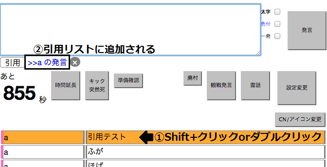
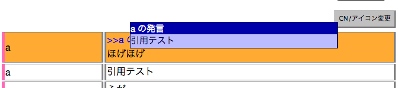
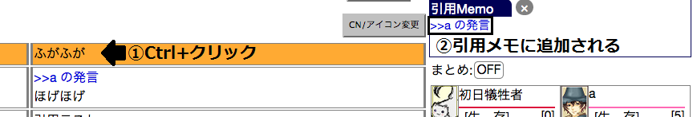
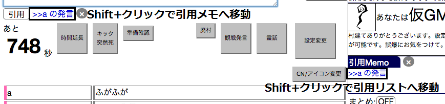
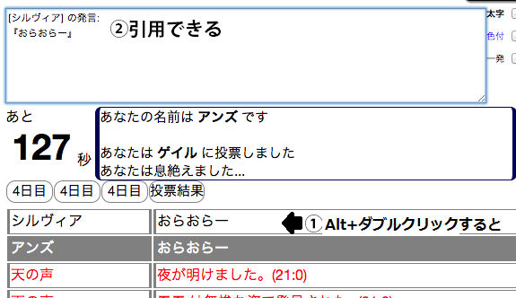

発言の引用の仕方
ログ欄・サブウィンドウ上で引用したい発言をShift+クリックまたはダブルクリックすると、その発言を引用リストに追加します。

引用リストに追加された発言は次の発言時に挿入され、リストの内容はクリアされます
引用は、マウスオーバーで内容を確認できます。

引用メモの使い方
ログ欄・サブウィンドウ上でCtrl+クリックすると、その発言を引用メモに追加します。

引用メモ上の発言は、発言時に挿入されず、また発言時に削除されません。
引用リスト/メモの操作
引用リスト・引用メモ上で要素をダブルクリックすると、その要素を削除します。
引用リスト・引用メモ上で要素をShift+クリックすると、その要素を引用リスト・引用メモ間で移動させます。

平文引用の仕方
ログ欄で引用したい発言をAlt+ダブルクリックすると、その発言をフォームに平文でコピーします。
